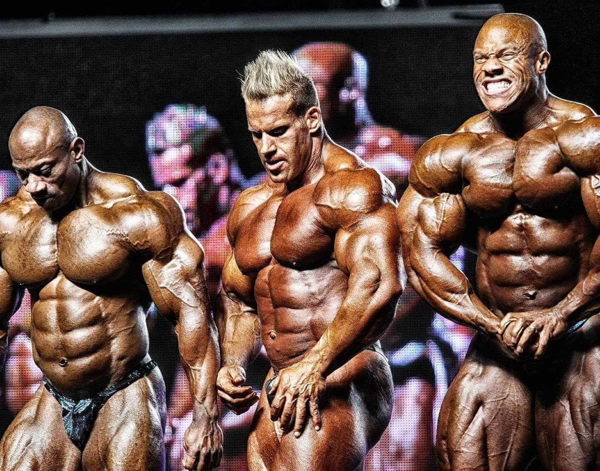
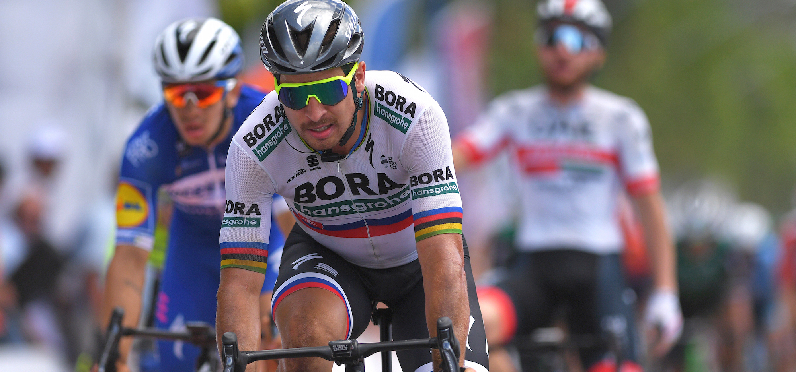

ОТКУДА У ВЕЛОСИПЕДИСТОВ ТАКИЕ ОГРОМНЫЕ НОГИ?
Когда дело доходит до состава тела, кажется, возникает небольшая путаница. Некоторые поисковики хотят знать, как велосипедисты становятся большими, а другие хотят знать, как они становятся маленькими:
Это потому, что велосипедисты из разных дисциплин, как правило, имеют очень разную эстетику, точно так же, как нападающие в регби - более крупные и тяжелые игроки, в то время как защитники меньше и быстрее.
Наиболее очевидными примерами являются спринтеры на треке против претендентов на генеральную классификацию Гранд Тура.
Спринтеры на треке должны быстро развивать максимальную мощность на ровной поверхности, поэтому для них решающее значение имеет соотношение мощности и веса. Претендентам на генеральную классификацию на тур де франсе нужно подниматься быстро, как можно меньше уставая, поэтому весовой предел имеет первостепенное значение.

Типы телосложения
Популярная научная теория утверждает, что люди от природы предрасположены к определенным типам телосложения, которые в целом делятся на три категории:
Тренировка в тренажерном зале для велосипедистов
Давайте немного отойдем от «большого» и сосредоточимся на «сильном». Бодибилдеры большие, но это не делает их хорошими велосипедистами.
«Чтобы получить пользу от силовых тренировок для нервной системы, нужно использовать более тяжелые веса и меньшее число повторений. Это противоположно тому, что делают бодибилдеры – они делают подходы по 10 и множество упражнений на каждую часть тела. [Как велосипедист] ваша цель состоит в том, чтобы получить пользу от силовых тренировок для нервной системы; работать над тем, как задействуются мышечные волокна», — объясняет главный тренер и владелец Surrey Strength and Performance.(откроется в новой вкладке), Дэн Ясиофано.
«Когда вы занимаетесь бодибилдингом [с большим количеством повторений], вы просто пытаетесь увеличить размер клеток в мышцах, а не скорость, с которой они работают». Таким образом, если вы хотите накачать мышцы, как бодибилдер, делайте много повторений, но если вы хотите стать сильнее, делайте мало повторений с большими весами.
Велосипедистам, которые сосредоточены на длительных поездках и скалолазании, умеренные силовые тренировки помогут сохранить лучшую посадку на велосипеде и снизить утомляемость, особенно в горах. Те, кто ищет быструю скорость и спринтерское мастерство, захотят проводить больше времени в тренажерном зале.
Для абсолютной силы выполняйте один 20-секундный спринт каждые пять минут или чаще. Чтобы попрактиковаться в способности следовать за несколькими атаками в такой ситуации, как критериальная гонка, попробуйте наборы из 20-секундного спринта / 40-секундного восстановления, повторенные четыре-шесть раз.
Контакты
Звони! ;)